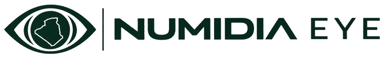

Fire Radiative Power
<5 MW
5-15 MW
15-30 MW
>30 MW
Detection (color = FRP) — tap for AI verdict
Wilaya boundary - click to focus

AI-POWERED WILDFIRE INTELLIGENCE FOR ALGERIA
AI-POWERED WILDFIRE INTELLIGENCE FOR ALGERIA
NUMIDIA EYE is Algeria's fire alarm, from space. It turns live NASA satellite fire detections into verified, actionable information for every wilaya — so a hot pixel on a satellite image becomes a verdict, an incident, and a place on the map, not just a dot.
Algeria's wildfires are spotted by satellite, but nobody turns those detections into verified information. Raw detections mix real wildfires with gas flares, industrial heat and noise — and a false alarm is as dangerous as a missed fire. NUMIDIA EYE exists to separate the two, honestly, before anyone acts on a signal.
Every summer, the same story comes back. Heat, drought and wind turn the forests of the north — Kabylia, the Tell Atlas, the coastal wilayas — into tinder, and fires return year after year. Villages are threatened, homes and olive groves and forests are lost, and civil protection teams are stretched across many fronts at once. It is not a one-off disaster; it is a season Algeria lives through, again and again.
That is why early detection matters so much. A fire spotted hours earlier is a fire that can still be contained before it reaches a village or jumps a road. A fire spotted late is already a rescue. NUMIDIA EYE exists for that gap: to see the fire from space, verify it honestly, and put it on the map while there is still time to act.
1. Detect. NASA FIRMS VIIRS thermal detections are ingested every 30 minutes and shown live on the map. A detection is one raw satellite pixel; color means fire radiative power (FRP).
2. Group. Detections close in space and time are grouped into incidents — a spatiotemporal cluster, not a confirmed fire. Priority is rule-based and never uses model output.
3. Verify. Each detection is checked by a random-forest verifier trained on 12,847 labeled detections, using 10 satellite features: brightness temperatures, FRP, confidence, brightness difference, scan geometry and satellite ID. It outputs FIRE, NON_FIRE or UNCERTAIN, with a model score. On held-out 2026 data it reached 94% precision and 81% recall, honestly framed as fire-vs-flare separation: the non-fire class is mostly gas flares.
4. Understand. Tap any dot for the AI verdict card and its explanation. Open an incident report for the full picture. The environment panel (wind, heat, dryness from Open-Meteo) is human context only — it never feeds the AI verdict.
The north is LIVE. The south reads UNAVAILABLE: there are no confirmed southern wildfire labels, so the system shows gray rather than guessing. If the model is unavailable, the verifier fails closed instead of inventing a verdict. NUMIDIA EYE is an independent research prototype, not an official alert system and never a dispatch service — for a real emergency, call Protection Civile on 14 or 1021.
Detections: NASA FIRMS VIIRS, via the NUMIDIA EYE API. Map: the project's own wilaya boundaries on a custom map style, no external tile server. Environment: Open-Meteo. Code is MIT; data terms are stated per layer. No site-wide data license is declared.
Arabic alerts to wilaya civil protection units, backed by the DGF director's public October 2026 statement that the directorate needs new technologies for early detection, monitoring and rapid intervention. Weather-aware verification and the satellite burn-scar vision track are the post-submission roadmap — the vision prototype (Sentinel-2 dNBR) is already built and tested, and parked until after the October 31 submission.
Built by BOUCIF MOHAMED HOUSSEM EDDINE — Built everything: data pipeline, API, AI verifier, dashboard, pitch — with Imen Benelhadj Djelloul (Fetched the fire data), Sofiane Khelfaoui (Civil protection advisor), Amir Boughomd (Web Application Tester & Ai Specialist) and Milissa Temam (Vision track: satellite burn-scar validation prototype, AI specialist).